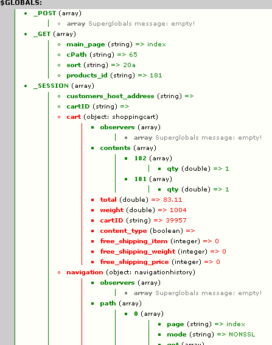

Super Globals Plus for Zen Cart 1.3.9, 1.5.0 through 1.5.5f
Version 1.6.6 by paulm, torvista and lat9
Current Support Thread at Zen Cart Forums: https://www.zen-cart.com/forum/showthread.php?p=429150
Copyright (C) Vinos de Frutas Tropicales 2011-2018
Paul Mathot, Haarlem, the Netherlands, September 2007 (beterelektro.nl) :: lat9 (vinosdefrutastropicales.com), 2011-2017. Released under the Gnu General Public License (see included LICENSE.TXT)
What it does
Super Globals Plus is a developers' tool that makes evaluating variables easy. It produces a clear overview of the contents of strings, arrays, constants, objects, arrays within object, objects within arrays or whatever.
Because the amount of information given by this tool was overwhelming to most new users of the Super Globals Plus script, version 1.24 and later only shows $_POST and $_SESSION by default.
Features:
- Show all GLOBALS, or just the Superglobals you need to evaluate.
- Show all defined constants (v1.2).
- Show a list of included files (v1.22).
- Show Superglobals either in a javascript popup window or at the end of each rendered page. (v1.4)
- Optionally hide HTTP_ variables when showing all globals.
- Show the whole content of each variable, including all objects and arrays etc!
- Recursion protection (optional: recursion level/off)
- Show the variable type (array, string, object, integer, NULL, boolean, resource).
- Converts strings into their htmlentities before output (v1.0)
- Clear output (see screenshot to the right).
- Optional IP address protection.
- Admin switches for all options.

How to use it
After you have you have installed the plugin and logged into your store's admin, you will see the Configuration->Superglobals selection. Within that selection are the values that you can use to control the plugin's display.
Installation
There are no core-file overwrites for the storefront elements of this plugin, but there are core-file admin changes and one template-override on the storefront. You should always backup your store's database and files prior to making any changes.
Note: The installation for Super Globals Plus, v1.6.3, has changed. The admin files that require update for this plugin have changed significantly starting with Zen Cart 1.5.5. As such, the installation is now dependent on the version of Zen Cart into which you're installing/upgrading this plugin!
Installation for Zen Cart 1.5.5
The admin-level core-file changes provided by this plugin use Zen Cart 1.5.5e as their change-basis.
- Rename the "YOUR_ADMIN" folder to match your secret admin folder's name, then merge this plugin's two core-files with the files currently installed in your store.
- Rename the "YOUR_TEMPLATE" folder to match your current storefront template's name, then merge this plugin's one template-override file with the file currently installed in your store.
- Log into your Zen Cart admin.
- Copy the plugin's files to your store's file-system:
- /includes/functions/extra_functions/superglobals.php
- /includes/templates/YOUR_TEMPLATE/common/tpl_main_page.php (One change-block, at the very bottom of the file)
- /includes/templates/YOUR_TEMPLATE/css/stylesheet_superglobals.css
- /YOUR_ADMIN/index.php (Removed from this plugin, v1.6.2)
- /YOUR_ADMIN/includes/footer.php (One change-block, at the very bottom of the file)
- /YOUR_ADMIN/includes/stylesheet.css (One change-block, at the top of the file)
- /YOUR_ADMIN/includes/stylesheet_superglobals.css
- /YOUR_ADMIN/includes/functions/extra_functions/superglobals.php
- /YOUR_ADMIN/includes/languages/english/extra_definitions/superglobals.php
- Click the "Admin Home" link. After you've clicked that link, the plugin's auto-installer will run and the Configuration->Superglobals will be available.
If you also require the admin-level Super Globals to be available on your admin's home-page, you'll need to follow the instructions in Admin Home-Page Installation.
Installation for Zen Carts prior to 1.5.5
The admin-level core-file changes provided by this plugin use Zen Cart 1.5.5b as their change-basis and are not compatible with Zen Carts prior to 1.5.5.
- Rename the "YOUR_ADMIN" folder to match your secret admin folder's name.
- If you require the Super Globals display to be available admin-side, you'll need to make the following file-edits:
/YOUR_ADMIN/includes/footer.php: Add the following code-block at the very bottom of the file:
/YOUR_ADMIN/includes/stylesheet.css: Find the line that reads:
@import url("index.css");/* including stylesheet for index.php */
and add this line directly after that:
@import url("stylesheet_superglobals.css");/* including stylesheet for superglobals display */
- Rename the "YOUR_TEMPLATE" folder to match your current storefront template's name, then merge this plugin's one template-override file with the file currently installed in your store. That single change-block is located at the very bottom of that file.
- Log into your Zen Cart admin.
- Copy the plugin's files to your store's file-system:
- /includes/functions/extra_functions/superglobals.php
- /includes/templates/YOUR_TEMPLATE/common/tpl_main_page.php (One change-block, at the very bottom of the file)
- /includes/templates/YOUR_TEMPLATE/css/stylesheet_superglobals.css
- /YOUR_ADMIN/includes/footer.php (The version you updated at step 2.1)
- /YOUR_ADMIN/includes/stylesheet.css (The version you updated at step 2.2)
- /YOUR_ADMIN/includes/stylesheet_superglobals.css
- /YOUR_ADMIN/includes/functions/extra_functions/superglobals.php
- /YOUR_ADMIN/includes/languages/english/extra_definitions/superglobals.php
- Click the "Admin Home" link. After you've clicked that link, the plugin's auto-installer will run and the Configuration->Superglobals will be available.
If you also require the admin-level Super Globals to be available on your admin's home-page, you'll need to follow the instructions in Admin Home-Page Installation.
Admin Home-Page Installation
Starting with Zen Cart v1.5.5, the admin-console main-page display (/YOUR_ADMIN/index.php) changed significantly from previous versions. Rather than saddling this plugin with version-specific files to copy, if you want to have the benefits of the Super Globals display on that page, you'll need to perform a simple update to your copy of that file, adding the code block below to the very end of /YOUR_ADMIN/index.php — just before the </body> tag:
Un-install
Run either superglobals_remove.sql (for Zen Cart v1.5.0 or later) or superglobals_remove_139.sql (for Zen Cart v 1.3.9x) to remove the database entries, then delete the files you previously copied (replacing the admin core files that were overwritten).
Version History:
- v1.6.6 (lat9), 2018-09-17
- BUGFIX: Future-proofing; need to check that an object is "countable" before using
sizeof or count!
- v1.6.5 (lat9), 2017-06-28
- BUGFIX: Re-instate pop-up functionality; mistakenly removed in v1.6.4.
- v1.6.4 (lat9), 2017-05-30
- BUGFIX: Correct CSS "location" on storefront pop-up display.
- CHANGE: Remove deprecated mysql function usage.
- v1.6.3 (lat9), 2016-12-04:
- BUGFIX: Really correct the index-0 non-display issue.
- CHANGE: Use Zen Cart 1.5.5b as the change-basis for all core-file changes. The installation instructions have been updated to make a distinction between initial installs, based on the Zen Cart version.
- v1.6.2 (lat9), 2015-12-30:
- BUGFIX: Correct issue (introduced in v1.6.1) where the information associated with index-0 of an array was no longer output.
- CHANGE: Use Zen Cart v1.5.5 as the change-basis for all core-file changes.
- v1.6.1 (lat9), 2015-12-06:
- BUGFIX: Correct validation issues.
- BUGFIX: Correct processing of Super Globals Exclusions so that the associated data elements are bypassed rather than removed.
- v1.6.0 (lat9), 2014/06/07:
- BUGFIX: SQL uninstall script doesn't check for a cgi of 0.
- Identify support for Zen Cart v1.5.3.
- Remove SQL install scripts, auto-install instead.
- Move ADMIN_OPTIONAL elements (supporting admin-based Superglobals) into the base install, removing an additional installation step.
- Removed (unused) /includes/stylesheet_superglobals.css
- Included Zen Cart v1.5.3 changes to /YOUR_ADMIN/index.php
- Added a configuration field (Super Globals Exclusions) so that you can identify a list of variables to exclude from the Super Globals variable display. These variables are usually large arrays that don't convey meaningful information.
- v1.5.0 (lat9), 2013/11/30, Include downwardly-compatible Zen Cart v1.5.2 changes in the /YOUR_ADMIN_OPTIONAL files.
- v1.4.4 (torvista, lat9), 2013/02/27
- Corrected validation errors (empty <strong> tags and popup display) — torvista
- Added "future proofing" around call to mysql_fetch_array call (deprecated in PHP 5.5) — lat9
- v1.4.3 (lat9), 2013/01/23. *BUGFIX* Updated /includes/functions/extra_functions/superglobals.php so that index 0 of an indexed array is properly output; the problem was introduced by me in the previous release.
- v1.4.2 (lat9), 2012/11/23
- Updated installation SQL files to correct problem documented by swguy here.
- Added new configuration value for v1.5.0 and later SQL values to control whether or not the queryCache object is shown. This object can be huge and takes a while to process. Changes made to the superglobals.sql file as well as /includes/functions/extra_functions/superglobals.php. Note that the queryCache object was introduced in Zen Cart v1.5.1; changing this configuration value on a v1.5.0 installation will have no effect.
- v1.4.1 (lat9), 2012/10/13
- Modified htmlentities calls to include ENT_COMPAT and the CHARSET, for compatibility with PHP v5.4
- Added htmlspecialchars wrapper around value outputs that were causing HTML validation errors
- v1.4 (paulm and lat9), 2011/09/12
- Added capability (and admin option) to display the Superglobals information either in a javascript popup window or at the end of each rendered page.
- v1.31 (lat9), 2011/08/15
- Corrected v1.5.0+ install/uninstall SQL, per this thread.
- v1.30 (lat9), 2011/08/07
- Corrected invalid HTML output caused by empty resources
- Added install/uninstall SQL for Zen Cart 1.5.0 and later
- Restructured zip-file directory, so that installation is simpler.
- v1.24
- Minor readme.txt edits
- Minor sql file edits (texts and some default settings) + added removal of old configurations
- Added extras folder which contains two ready made files so you can even skip the two simple file edits in most cases.
- v1.22-1.23
- Minor layout fix and some readme.txt edits
- v1.21
- Added get_ included_ files()
- v1.2
- Added defined CONSTANTS display.
- Fixed bugs in admin superglobals function (admin superglobals would only display when shop was in root and when catalog superglobals were enabled).
- Modified readme for 1.3.5 compatibility
- v1.12
- fixed typo (which caused XHTML validation errors)
- v1.11
- Fixed "Enable Superglobals" switches (error in 1.1)
- v1.1
- v1.0, First public non beta version.
- Removed the "Show single var" feature, since it did not make much sense after all.
- Shows the var type for every var now (before only arrays and objects where identified as such, now int, string, etc etc are too).
- Added htmlentities function for strings.
- Cleaned up code (replaced if else structure by switch() case)
- Added feature to echo $GLOBALS
- Combined catalog and admin script into one
- Improved HTML source formatting
- Added recursion level counter (and a maximum recursion level setting)
- Renamed functions, again (hopefully the function names do make a little more sense now)
- Added CSS color for resources (blue)
- v0.99
- Renamed to 0.99 ;-) (not 1.00 because I did not get to cleaning up the code yet)
- Some (other) small changes to this readme.
- v0.97
- If the supervar_echo() function is being used, the output will be displayed in the HTML body (while it was displayed "on the spot" in previous versions).
- Added option to print the data at the top or bottom of the page.
- v0.91
- Fixed HTML validation
- Improved styles
- v0.9, Added admin version and the possibility to view the contents of other (than global) variables/constants/array's/objects.
- 0.81, Added sql to remove the settings from the database.
- v0.8, First public version